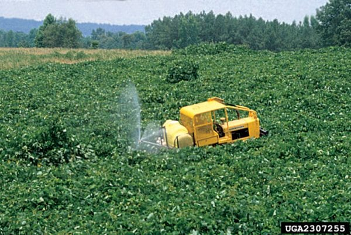
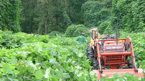

Pueraria montana var. lobata

Societal Story:
The Problem
A wicked problem is a complex problem that is difficult or impossible to solve. This is because a lack of knowledge of what you are trying to solve. Many factors go into these problems because you have to make everyone happy and thats hard so it usally never gets fully solved because there never a right way to fix it. That ofte creates more problems.
What its about.
The Kudzu has started to take over the south east of the united states. Calling it the vine that took over the south.The large spread has sparked tons of debate among landowner and communities that are directly affected to it. First land scientists say this plant can take over and reshape whole ecosystems by blocking sunlight for other plants and recources. Farmers talk about this plant because it swallows their pastures and causes a bad yeild of grass in the feilds. Some people liek kudzu for cooking reasons, making jelly, and other foods. In japan, kudzu is native and they use this plant for many different rescources. They value this plant as a food and medicine rather than a invasive species.
Furthermore, when humans introduce invasive plants into new environments it causes problems for us humans and the natural ecosystem already there. The question is who has to deal with the problems. Just one simple thing can introduce years of maintenance that has to be done.
Viewpoints
5 different viewpoints to explain the plant
Website
The Nature Conservancy
Kudzu as ecological threat
"Kudzu is an ecological threat. This is because it outcompetes native plants by growing over them block their photosynthesis. This loss of native vegetation harms insects, animals, and other plants, leading to cascading ecosystem damage and potential species extinctions. Its deep roots allows it to survive droughts and take over areas."
Contributor
Bill Finch
botanist
"The myth that kudzu is unstopable is overblown. It is more cultural legend than ecological reality. This is because of real data being found. Now that scientists at last are attaching real numbers to the threat of kudzu, it's becoming clear that most of what people think about kudzu is wrong. Its growth is not "sinister," as Willie Morris, the influential editor of Harper's Magazine, described in his many stories and memoirs about life in Yazoo City, Mississippi."
Contributor
Nancy J. Loewenstein
Forrest Scientists
"Kudzu causes agricultural and forrest damage. teh vines of kudzu can stunt the growth of timber and become a serious weed if left alone. Taking over feild, buildings, lots, and urban areas where maintenance is not as persistent."
Contributor
Duangjai Tungmunnithum, Aekkhaluck Intharuksa, and Yohei Sasaki
pharmaceutical scientists
"Kudzu is a valuable medicine and cosmetic. Since ancient times kudzu has been a food ingredient and herbal medicine used by asin countrys. The plant provides 70 compounds used in medicine today which makes it very valuable. Mainly used for isoflavonoids like puerarin and daidzein. This perspective treats kudzu not as a weed but as a plant with untapped commercial and health potential."
Contributor
Donald L. Grebner, Pete Bettinger, Jacek P. Siry, and Kevin Boston
forestry and natural resources professors
"They talk about wildlife habitats Vs. carbon loss. Even though many say kudzu is invasive, it does provide benefits. It adds great camouflage for certain animals and white tail deer love to eat such plant. However, research has found that kudzu infestation changes decomposition processes and can reduce soil carbon stocks by 28%, potentially enhancing the greenhouse effect and accelerating climate change."

Kudzu Takeover

Chemical Control

Mechanical Control